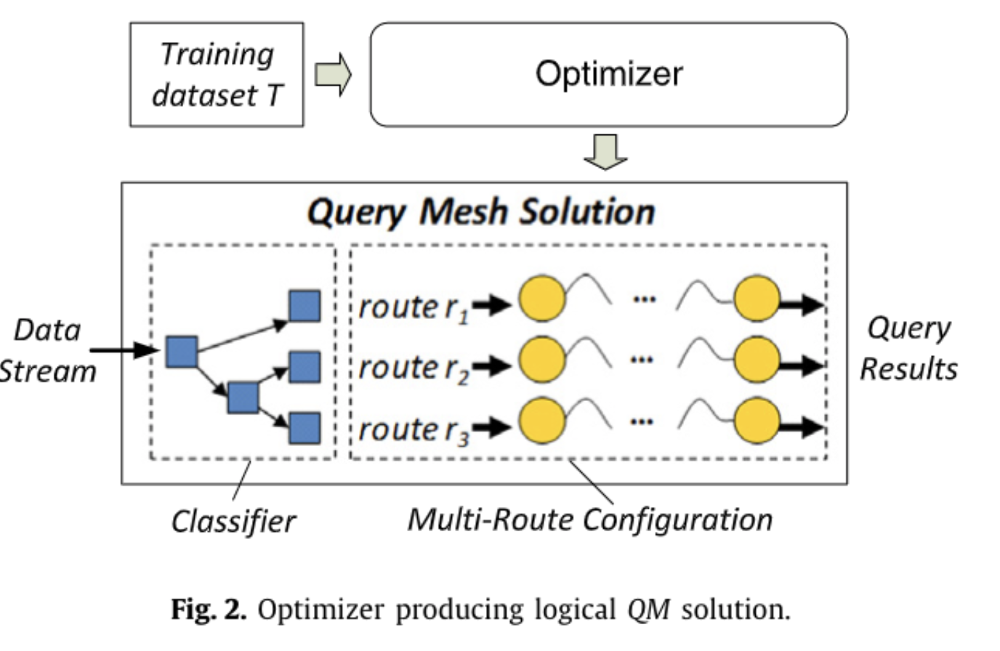
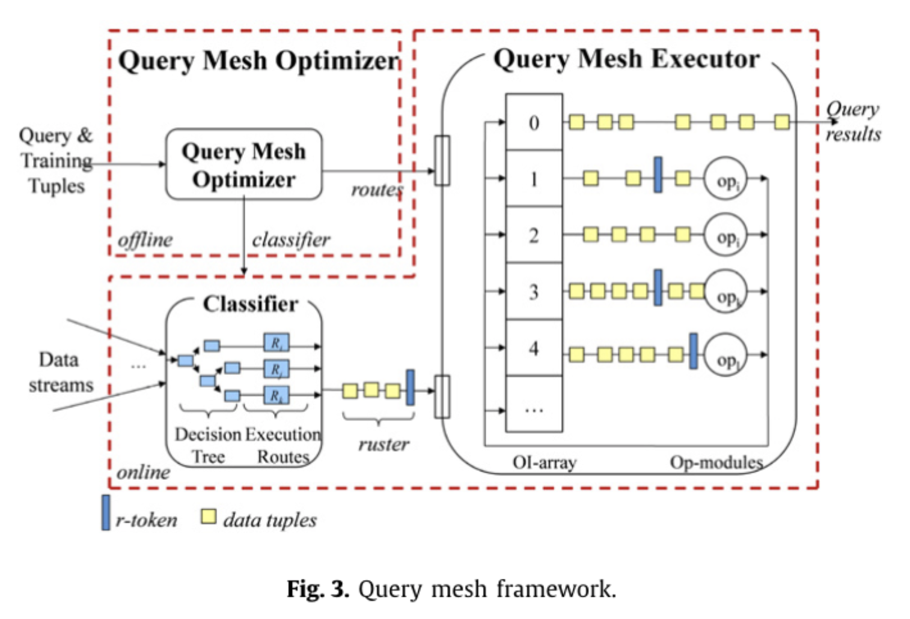
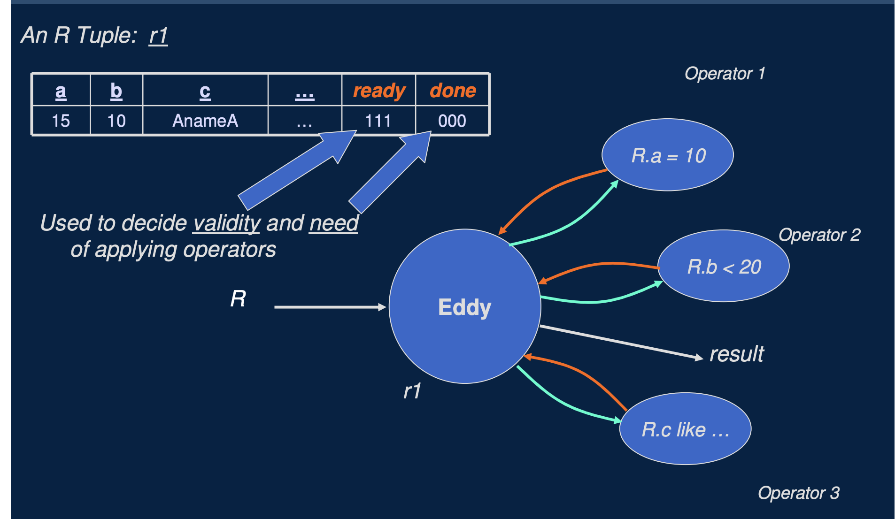
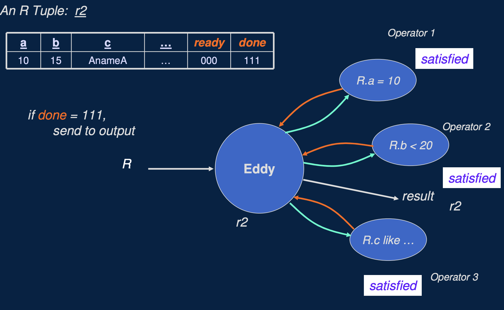
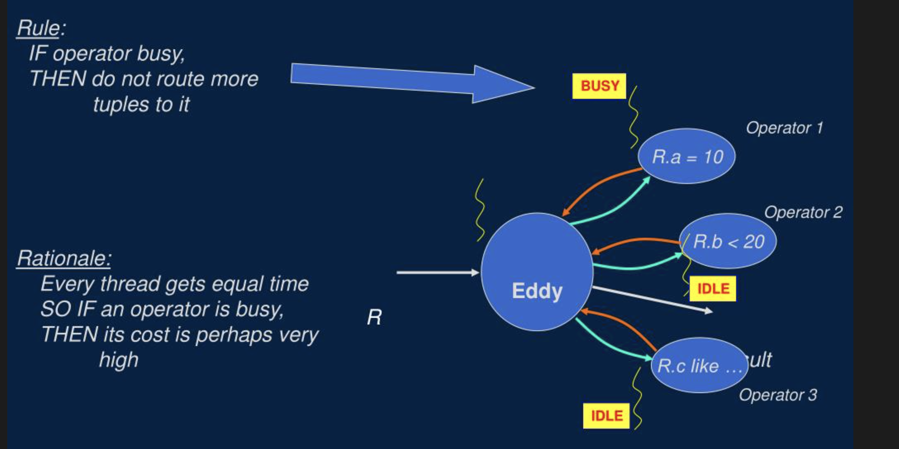
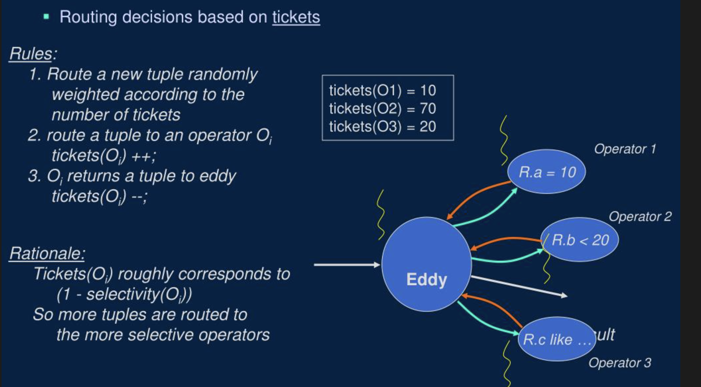
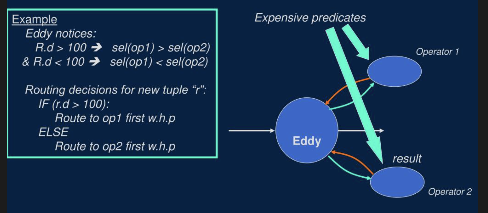
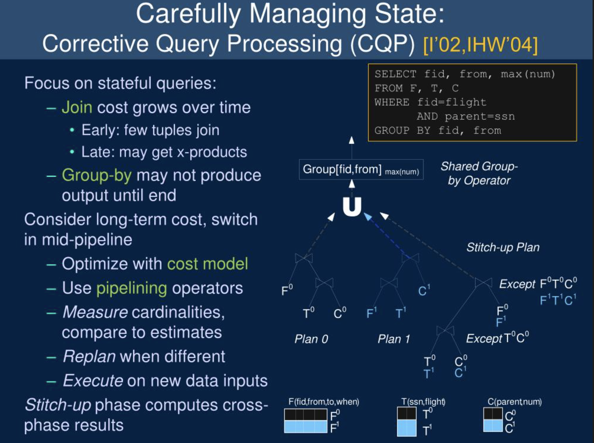
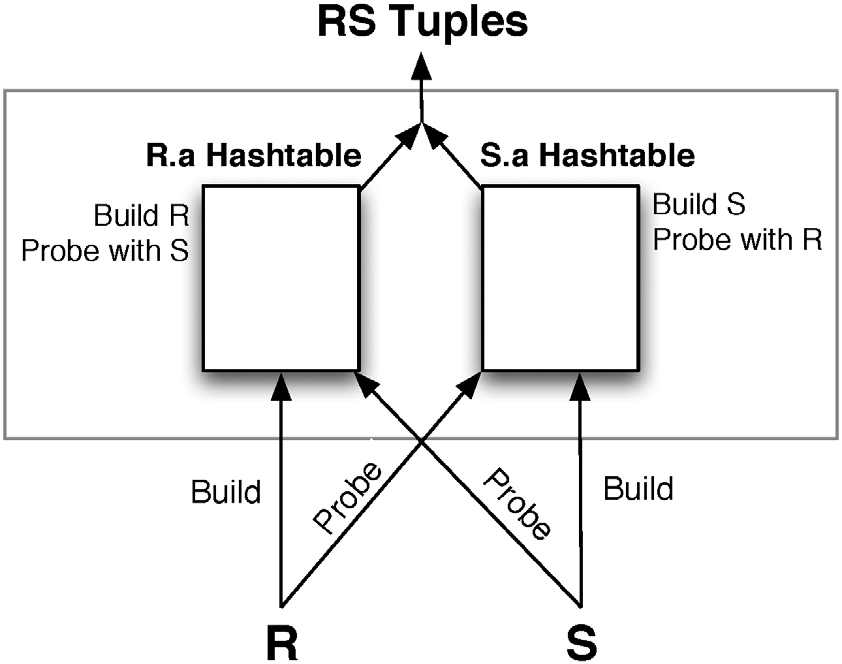
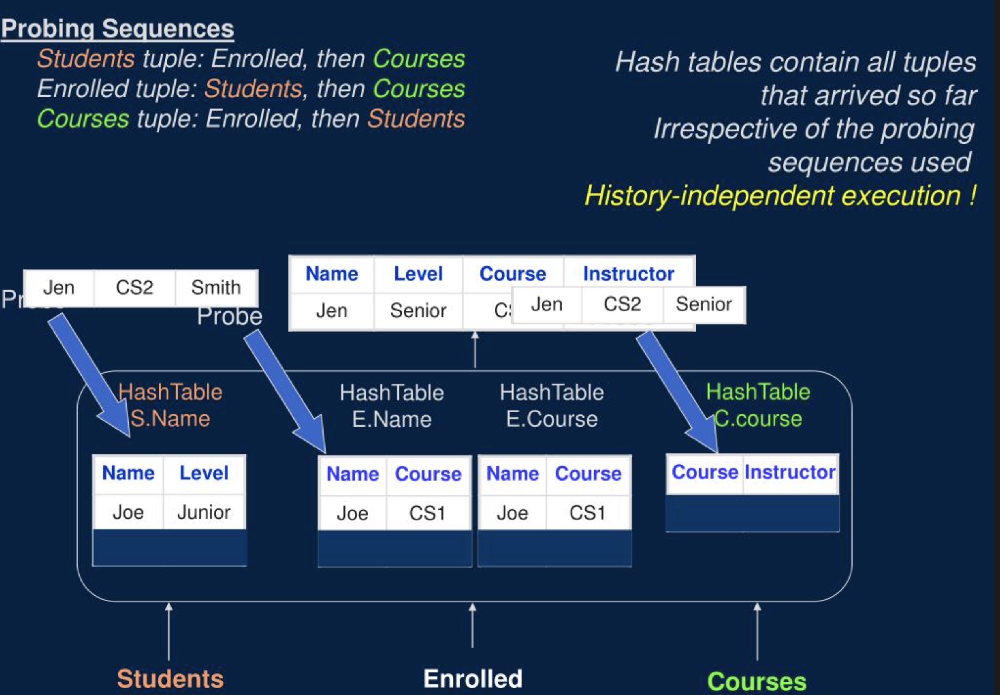

数据库之美 —— 查询自适应执行
作者: 康凯森
日期: 2022-12-03
分类: 数据库
- 为什么需要自适应执行
- 什么是查询自适应执行
- 如何进行查询自适应执行
- 自适应执行策略的关键点
- 目前哪些 Case 可以自适应
- 自适应执行的挑战
- 自适应执行的总结
- 自适应执行的发展
- 自适应执行和公司管理
- 总结
- 参考资料
今天给大家分享下数据库领域比较重要的优化：查询自适应执行。
为什么需要自适应执行

如图，大家都知道，传统数据库的用户接口一般是 SQL, 而 SQL 是声明式语言, 只描述了 What，没有描述 How, 所以数据库接收到 SQL，需要先通过查询优化器将 SQL 转为可执行的物理执行计划 （也就是 How），再将物理执行计划交给查询执行器执行。
大家也都知道，同样一条 SQL 可能的执行计划可能有成千上万种，不同的执行计划执行效率可能相差成百上千倍，也就是说，如果执行计划选择错误，查询执行器的执行能力再强，性能再好，也无济于事。就相当于在一场战争中，如果大的战略决策错了，个体士兵的战斗能力再强，也无法改变整个战争的结果。
而优化器能否生成尽可能优的执行计划的关键就是统计信息的准确与否，选择度的估计，基数估计的准确性，而残酷的现实是：
- 大多数时候，我们无法获取统计信息，或者获取的统计信息很不准确
- 在选择度估计，基数估计的时候，我们做了太多关于数据分布，数据特征的假设，但是大多数时候，这些假设都不成立
- 在流处理场景下，数据是源源不断的进来的，数据特点可能会不断变化，整个流处理任务，我们不可能只生成一个固定的执行计划
- 当查询复杂到涉及几十，几百张表时，执行计划的空间是指数级增长的，查询优化器已经不可能在有限的时间内给出足够好的执行计划
综上，我们知道，传统的先 Plan 一次再执行的执行模式无法在所有查询场景下都适用，所以我们要引入自适应执行。
什么是查询自适应执行
改变之前的先 Plan 一次再执行的模式，在执行过程中收集更多统计信息，收集数据的分布和特征，收集集群的资源使用情况，然后重新优化和改变执行计划，或者局部及时调整执行策略。 几个重要的特点：
- 变静态决策为动态决策：根据运行时的真实信息调整执行计划
- 由一次 Plan 变为 多次 Plan
- 由一种执行策略 变为 多种执行策略
- Plan 由真实的数据本身在运行时决定，不同的数据会拥有不同的执行策略
下面两张图是几种自适应策略的示意，图 3 是基于 Plan 的自适应执行，图 4 是基于路由策略的自适应执行， 图 5 是 针对 Continuous Query 的自适应执行，具体的思路后面会介绍到。


如何进行查询自适应执行
顶层决策：优化器多次 Plan
这个思路最简单，也最容易实现，就是在执行过程中的一些物化点，收集简单的统计信息，然后让优化器重新进行 Plan。
所谓的物化点，就是当前时刻，可以拥有查询执行的结果的全量数据。在 Stage By Stage 执行模型中，每个 Stage 的结束都是物化点，在 Pipeline 执行模型中，每个 Block 算子执行结束的地方，可以作为物化点。
这种思路的典型实现有 Spark，Oracle，BigQuery 等, 一个典型的自适应策略就是将 Join 分布式执行策略的自适应，比如一开始是 Suffle Join，发现右表比较小后，转成 Broadcast Join。
顶层决策：Late Binding 之预计算多个 Plan
和在物化点重新 Plan 的思路类似，我们可以提前根据 SQL 模板规划好多个 Plan，比如对于 table a join table b where b.column1 = x, 由于 b 表 column 1 的统计信息缺失，我们无法准确估计出 b 进过过滤后的行数，但是 a 的表统计信息我们有，假如我们知道 a 表的行数是 1000 万行，那么我们可以根据 b 表的行数准备 3 个 不同的 plan, 如下图所示：

顶层决策：Feedback 根据历史信息修正
我们需要自适应的根源是优化器的统计信息不准，那么解决这个问题的一个思路就是我们想办法让统计信息变得更准。 在用户的实际生产查询中，对同一个表的某些列经常会发起多次的连续查询，这样我们就可以前几次查询的时获取到相关列的 max,min,基数值等统计信息来修正优化器中的统计信息，让随后的查询可以获得更精确的统计信息，进而产生更优的 Plan。
这个思路已经在工业界大量实现，Feedback 这种方式的缺点是：
- 无法解决某张表，某个列第一次查询没有统计信息的问题
- 无法解决 Streaming 查询统计信息不断变化的问题
顶层决策：多个 Plan 同时执行，择优取之
还有一种类似 Spark, MapReduce 推测执行的思路，我们在一开始不是选择出一条 “最优” 的 Plan 去执行，而是选择出“最优”的两三个 Plan 去执行，执行一段时候后，发现哪个 Plan 执行地最快，就最终选择哪个，其他的 Cancel 掉。
这个思路的缺点比较明显：
- 额外消耗较多的资源
- 最多只能同时执行少数几个 Plan，但是当 SQL 很复杂时，会有成千上万条 Plan，很慢保证选择出高效的 Plan
顶层决策：不同分组的数据启用不同的算子

如上图所示，我们可以和机器学习结合，分析数据特点，根据数据的特点对数据进行分组，让不同组的数据可以执行不同的查询计划。
下图是一个更具体的示意，可以看到在执行层，会有多组执行算子，查询时会根据数据本身将数据路由到不同的执行算子。 当然，如果让查询优化器和机器学习结合的话，我们也可以从让统计信息更准确这个方向发力，通过机器学习的方式让统计信息更准。

中层决策：增加专门的决策算子
我们发现，顶层要做出更好的决策，需要的信息更多，一旦决策失误，影响面会更大，要做出的决策越细，决策本身的成本就会更低，所以类似公司管理，我们可以将决策权下方到中层或者基层，让中层或者基层管理作出细粒度的决策。
但是我们在正常的算子中并没有专门的决策算子，我们需要引入一个新的算子：Eddy

如上图所示，Eddy 在 Pipeline 中是一个决策控制算子，会控制连接多个实际执行的算子，假如要完成 3 表 Join， Eddy 在 tuple 粒度控制每行数据进入每个 join 算子的顺序，并动态调整整个顺序，让每个 join 算子处理的数据量尽可能均衡，让整体系统资源尽可能利用的更充分。


如上面两个图所示，是 Eddy 自适应处理多个谓词顺序的示例，假如表 R 的查询有 R.a = 10, R.b < 20, R.c like 'xxx', Eddy 就会动态的自适应调整每行数据被每个谓词处理的顺序，自适应调整的时候注意会考虑 每个谓词的选择度 和 每个谓词本身计算的代价。而要实现这一点， Eddy 算子就必须记录每行数据需要被哪些谓词处理，以及是否处理完成。eddy 算子是通过给每行数据新增两个 ready 和 done 字段来完成的，ready 表示是否需要每个谓词处理，done 表示每个谓词是否处理完成。
这里有一个比较重要的问题是，我们到底根据什么策略来进行自适应，常见的策略有：
- 贪心的策略：如下图所示，如果某个谓词算子处理的快，就让这个谓词算子处理更多的数据，因为如果某个谓词算子处理的快，往往意味着这个算子计算成本更低，选择度更低。

- 彩票调度算法：原理和 CPU 的彩票调度算法一样，让每个算子处理的数据大致满足某个比例，这个比例一般和谓词的选择度有关。

- 基于内容的自适应：如下图所示，就是根据每一行数据的具体内容，决定路由到哪个算子

中层决策：动态切换 Plan
类似于前面的全局在运行时重新 Plan，我们也可以在局部动态切换 Plan，如图是一个 3 表 Join 后再 group by 的例子，我们在运行时变换 3 表 Join 的顺序，但是这里需要注意的点，为了保证结果的正确性，我们需要再额外加入一个缝补或者纠正的 Plan：让分别在 Plan 0 和 plan 1 执行的两部分数据 （T0,T1, C0,C1）再 Join 一次，然后把 3 部分数据再 Union 一下。

这种自适应执行策略 需要 Pipeline 引擎具有动态修改拓扑结构的能力。
基层决策：算子内部自适应
自适应执行的最细粒度便是一个算子内部的自适应执行，这里会介绍下最常见的 Scan 索引的自适应选择，谓词顺序选择的自适应，以及 Join 算子的自适应。
Scan 索引的自适应选择
在传统 TP 数据库，Scan 索引的选择是由优化器决定的，和 join reorder 结合后，会导致搜索空间的指数级膨胀，为了避免这个问题，在 StarRocks 中，我们在优化器中不考虑 Scan 索引的选择，而是将 Scan 索引的选择交给了存储层，在存储层 Scan 时，我们会对 Bitmap 索引，延迟物化等策略进行了自适应处理，假如一个 Bitmap 索引的选择度很低，我们就会使用 bitmap 索引，否则就不会使用 Bitmap 索引。
谓词顺序选择
前面介绍 eddy 算子时谓词顺序如何进行自适应的基本思想我们已经介绍过了，这里就不赘述了，区别只是我们在一个算子内部完成了这个逻辑：

Symmetric Hash Joins

传统的 Hash Join 一般是用右表去构建 Hash 表，然后左表去 Probe，这样就没有自适应的空间。 如上图所示，Symmetric Hash Joins 是左右表数据都会构建 Hash 表，当然大家会发现，这样相比传统的 Hash join 肯定会使用更多的内存，所以 Symmetric Hash Joins 主要是用在 streaming 处理场景。 和 Eddy 算子搭配之后，Symmetric Hash Joins 就可以比较好的进行多表Join Reorder 的自适应。
N-ary Symmetric Hash Joins

如上图所示，我们可以不依赖 Eddy 算子，让 Join 算子更强大一些，我们将 Symmetric Hash Joins 进行扩展，变成一个可以同时多路输入的 N-ary join，让 Join Reorder 完全由一个算子控制，这样的话就可以在一个算子内部灵活的决定每行数据 Probe 的顺序。当然，这种方式也只适合 Streaming 处理。
自适应执行策略的关键点
- 在什么粒度去自适应执行
- 需要收集哪些指标信息和数据信息
- 何时去收集信息
- 通过什么方式去收集信息
- 要不要调整执行计划：触发重新 Plan 的阈值或者条件是什么
- 何时去 Replan
- 切换 Plan 时如何处理有状态的算子
目前哪些 Case 可以自适应
- 查询的并行度：集群没有负载时，并行度高一点可以充分利用资源；集群负载高时，并发度可以低一点；简单查询的并行度可以低一点；发现有数据倾斜时自动增大查询并行度
- 过滤的谓词顺序： 需要根据谓词的选择度和谓词本身的计算代价动态调整谓词顺序
- 多表 Join 的顺序： 可以根据真实的数据量和 Join 谓词的选择度动态调整 Join 的顺序
- 分布式 Join 的执行策略：运行时改变 Join 的分布式执行策略，比如通过执行过程中，收集的实时统计信息发现右表实际数据量比较小时，从 shuffle join 改成 broadcast join
- Join, Aggregate, Scan, Sort 等算子的具体策略和算法
- 压缩和编码方式：网络传输和存储层 压缩和编码方式根据数据特征进行自适应选择
- Remote data source 的等待策略
自适应执行的挑战
- 有状态算子的在自适应过程中状态如何正确处理，如何将 Plan 切换的成本变到最低
- 正确性保证：Plan 切换前后数据不重复计算，Pipeline 执行时可能已经输出了部分结果
- 自适应执行的 Plan 无法提前确定，查询的性能缺少可预测性
- 测试的难度和成本会增加
- 如果避免不需要自适应执行的查询退化
- 触发重新 Plan 的条件如何确定
自适应执行的总结
- 从整个查询，到部分查询，到具体的每个算子，自适应执行的粒度越细，信息收集越准确，越及时，越容易进行自适应，但是自适应的 overhead 也越高
- 从数据量的角度来说，自适应的粒度可以是整个查询，一批数据，和一行数据
- 算子的不同实现方式决定了自适应的难易程度：以 Join 为例， Hash Join 就很难自适应， Nested loops join 可以在每个 Loop 结束对自适应，N-ary Symmetric Hash Joins 可以对每行数据做自适应
- 基于 Eddy 算子路由方法的自适应执行过程其实和强化学习的原理和流程很像，了解强化学习原理的同学可以对比思考下，我就不展开了
自适应执行的发展

在 07 年左右，学术界就有了大量的查询自适应论文，但是在工业界自适应是最近几年才迅速发展起来的，上图展示的微软 SQL Server 的查询智能化和自适应执行的进展，可以看到，从 2017 到 2022 年整整 5 年时间， SQL Server 每一个重要的优化点或者 Feature 都是以年为单位计算的，这说明自适应执行这个重要的优化点落地并不简单。不过或许这也有可能是 SQL Server 有大量的历史负担，或许也是我们新一代数据库超越传统数据的机会。
自适应执行和公司管理
- 信息收集的准确性，收集的及时性，信息传递的带宽和速度，很大程度上会决定这家公司的发展
- 当收集的信息足够准确时，决策的好坏就取决于决策者的决策模型；当每家公司的决策相同时，最终就要拼执行者的执行能力
- 顶层决策者关注的细节越多，做出决策的时间就越长，而且关于细节的决策大概率可能是错误的。
- 从基层到中层再到顶层，决策需要的信息越多，决策影响的范围越大，自适应重新决策的难度越高
- 一个优秀的执行者除了需要具备优秀的执行能力，还需要具备快速适应变化和快速决策的能力
- 如同不同算子的实现本身就决定了其自适应能力的强弱，每个公司不同的个体和团队拥抱变化的能力也不同，我们需要根据每个团队和个体的特点分配不同的执行策略
- 静态决策只适合简单的事情，复杂的事情几乎都需要进行动态决策
总结
要解决统计信息缺失或者不准的问题，核心思路只有两个：一个是想办法让统计信息变准；另一个是就是不依赖统计信息，进行自适应执行，但是从学术界和工业界优化器几十年的发展来看，第一个问题在不引入机器学习技术的情况下很难被很好的解决，所以近些年来，各个数据库厂商都开始或准备在自适应执行上大力投入，我坚信，在未来几年，凡是优秀的数据库，都会大力发展查询自适应执行。
参考资料
- Adaptive Query Processing in the Looking Glass: https://15721.courses.cs.cmu.edu/spring2020/papers/21-optimizer3/babu-cidr2015.pdf
- Multi-route query processing and optimization: https://www.sciencedirect.com/science/article/pii/S0022000012001468
- Adaptive Query Processing : https://www.vldb.org/archives/website/2007/program/slides/s1426-deshpande.pdf
- Adaptive Query Processing : https://www.researchgate.net/publication/236345471_Adaptive_Query_Processing
欢迎来知识星球和我交流